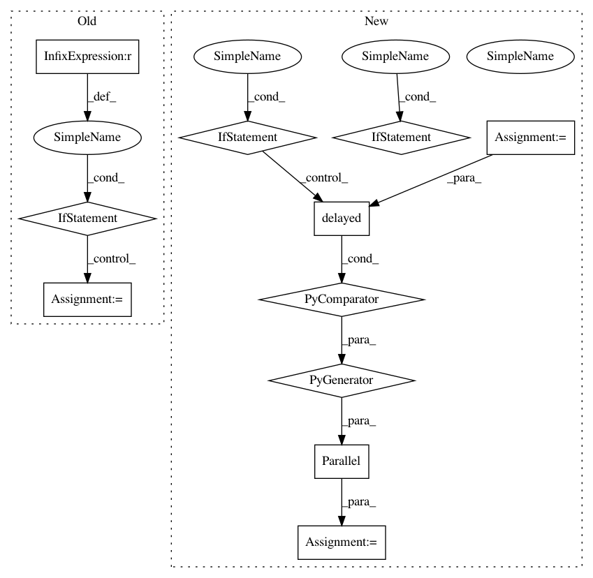

3544c70a5c7e63d172baacb9b380a613f1fa92e0,tslearn/metrics.py,,cdist_dtw,#Any#Any#Any#Any#Any#Any#,597
Before Change
dataset1 = to_time_series_dataset(dataset1)
if dataset2 is None:
if global_constraint is not None:
global_constraint_str = global_constraint
else:
global_constraint_str = ""
// TODO
return njit_cdist_dtw_self(
dataset1,
global_constraint_code[global_constraint_str],
sakoe_chiba_radius, itakura_max_slope)
After Change
// https://github.com/rtavenar/tslearn/pull/128//discussion_r314978479
matrix = numpy.zeros((len(dataset1), len(dataset1)))
indices = numpy.triu_indices(len(dataset1), k=1, m=len(dataset1))
matrix[indices] = Parallel(n_jobs=n_jobs)(
delayed(dtw)(
dataset1[i], dataset1[j],
global_constraint=global_constraint,
sakoe_chiba_radius=sakoe_chiba_radius,
itakura_max_slope=itakura_max_slope)
for i in range(len(dataset1)) for j in range(i + 1, len(dataset1))
)
return matrix + matrix.T
else:
dataset2 = to_time_series_dataset(dataset2)
matrix = Parallel(n_jobs=n_jobs)(
In pattern: SUPERPATTERN
Frequency: 3
Non-data size: 11
Instances
Project Name: rtavenar/tslearn
Commit Name: 3544c70a5c7e63d172baacb9b380a613f1fa92e0
Time: 2019-08-18
Author: romain.tavenard@univ-rennes2.fr
File Name: tslearn/metrics.py
Class Name:
Method Name: cdist_dtw
Project Name: rtavenar/tslearn
Commit Name: 3544c70a5c7e63d172baacb9b380a613f1fa92e0
Time: 2019-08-18
Author: romain.tavenard@univ-rennes2.fr
File Name: tslearn/metrics.py
Class Name:
Method Name: cdist_dtw
Project Name: kenshohara/3D-ResNets-PyTorch
Commit Name: 82b45455ebe631854f99c2f716ab5488f1842925
Time: 2018-11-27
Author: kensho.hara@aist.go.jp
File Name: util_scripts/video_jpg_ucf101_hmdb51.py
Class Name:
Method Name:
Project Name: kenshohara/3D-ResNets-PyTorch
Commit Name: 2dc9326a620d9fe60cc8c796812f33011d68f7b9
Time: 2018-11-27
Author: kensho.hara@aist.go.jp
File Name: util_scripts/video_jpg_kinetics_mit.py
Class Name:
Method Name: